Um guia curto para quem está abrindo o app pela primeira vez: como criar conta (se quiser), encontrar um hospital perto de você e deixar o app detectar sua visita sozinho — sem precisar apertar nada.
O saude-monitor ajuda você a encontrar hospitais e unidades de saúde perto de você e mostra, de forma pública e transparente, a nota e o tempo médio de espera de cada um — calculados a partir de avaliações reais de outras pessoas.
Quando você chega a um hospital, o app percebe sozinho pela localização do seu celular e começa a contar o tempo da visita. Na saída, pede sua opinião em menos de um minuto. Você pode usar tudo isso sem nunca criar uma conta.
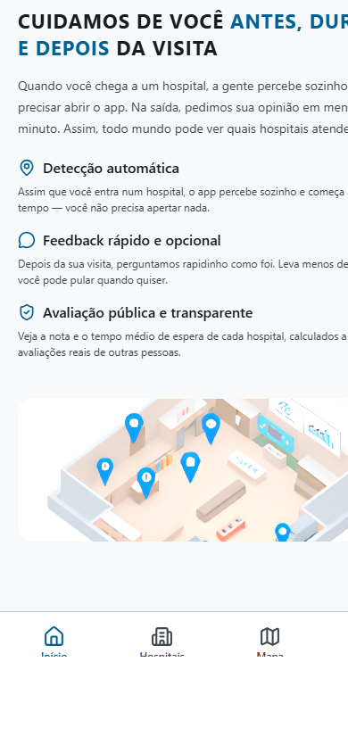
Você não precisa se cadastrar para usar o app: pode buscar hospitais, ver notas, consultar o mapa e fazer check-in manual sem nenhuma conta. Criar uma conta só vale a pena se você quiser guardar seu histórico de visitas e suas avaliações.
Para criar uma conta, abra a aba Perfil e toque em Criar conta.
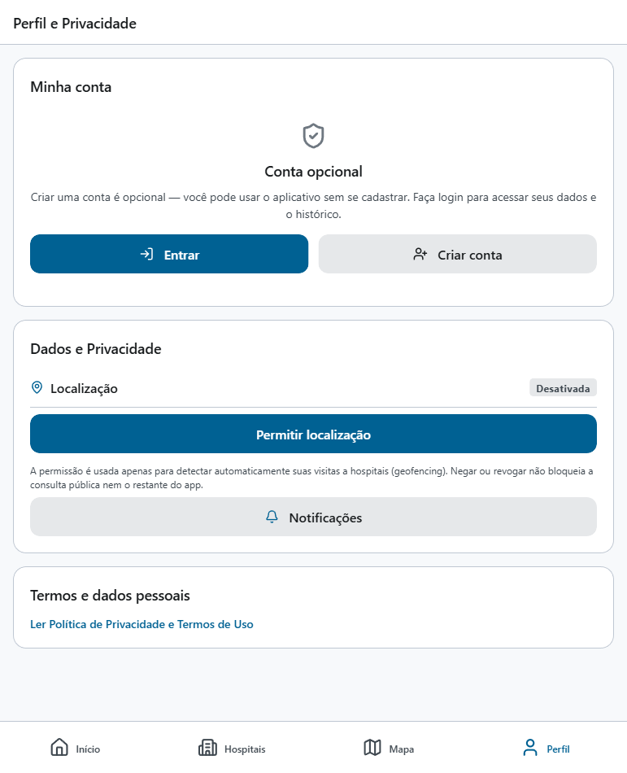
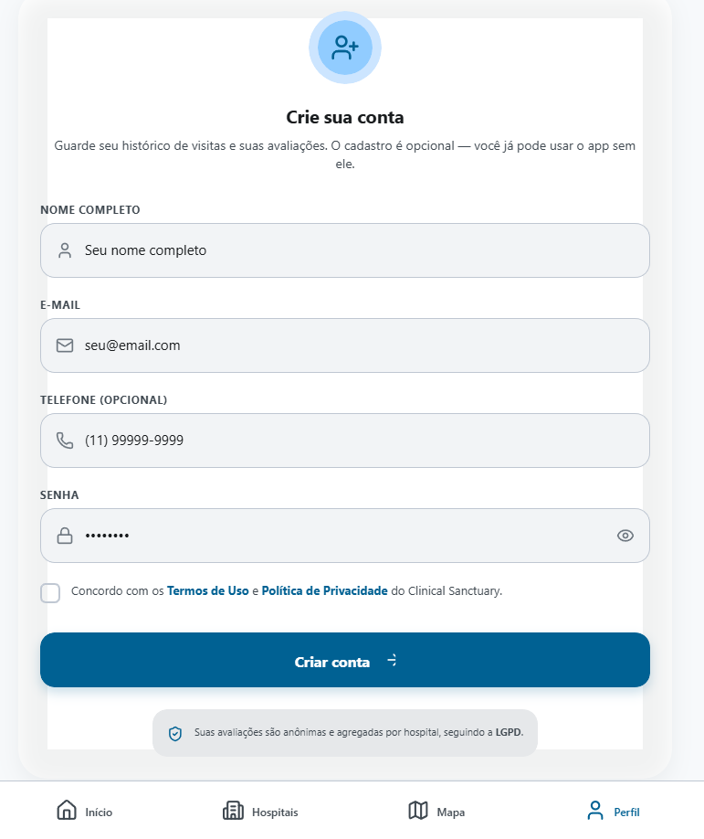
Depois de criar a conta, o app envia um código de confirmação para o seu e-mail. Você precisa confirmar antes de conseguir entrar — isso garante que, se um dia precisar redefinir sua senha, o código chegue no endereço certo.
Se você já tem conta, abra Perfil → Entrar e informe seu e-mail e senha.
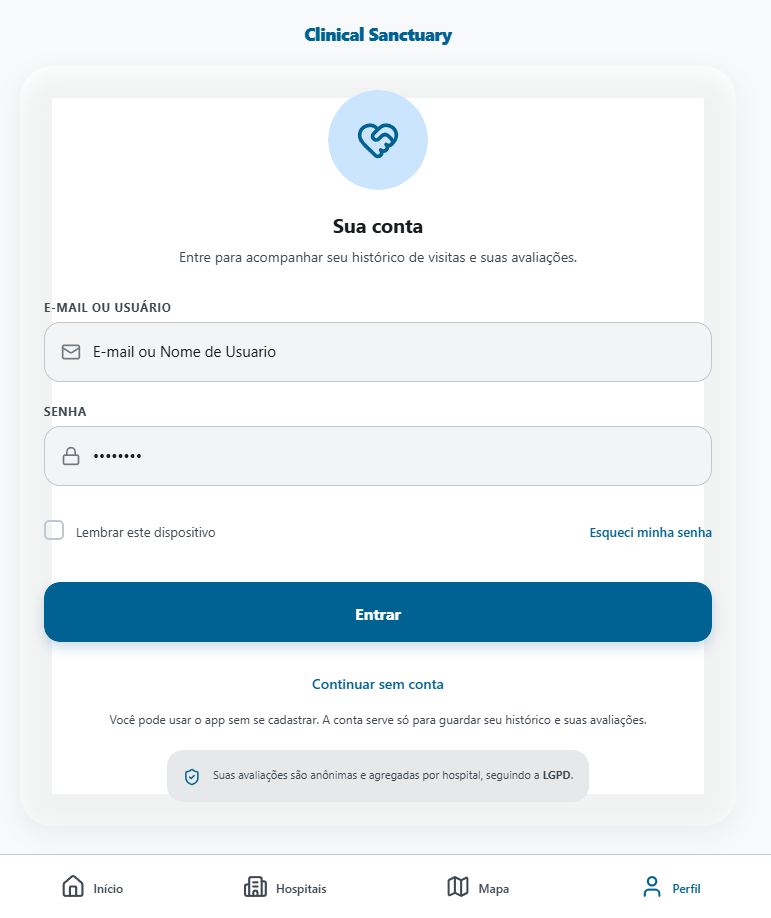
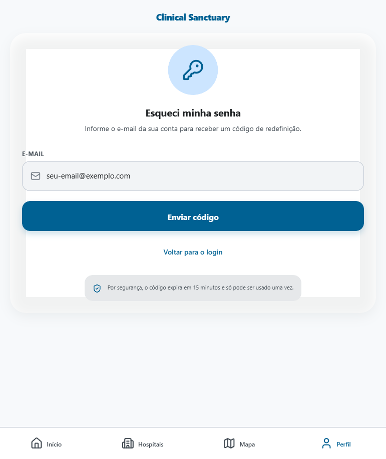
Abra a aba Hospitais para ver a lista completa, com o tipo de cada unidade (hospital, UBS, UPA, centro especializado etc.) e sua categoria (público, privado ou filantrópico).
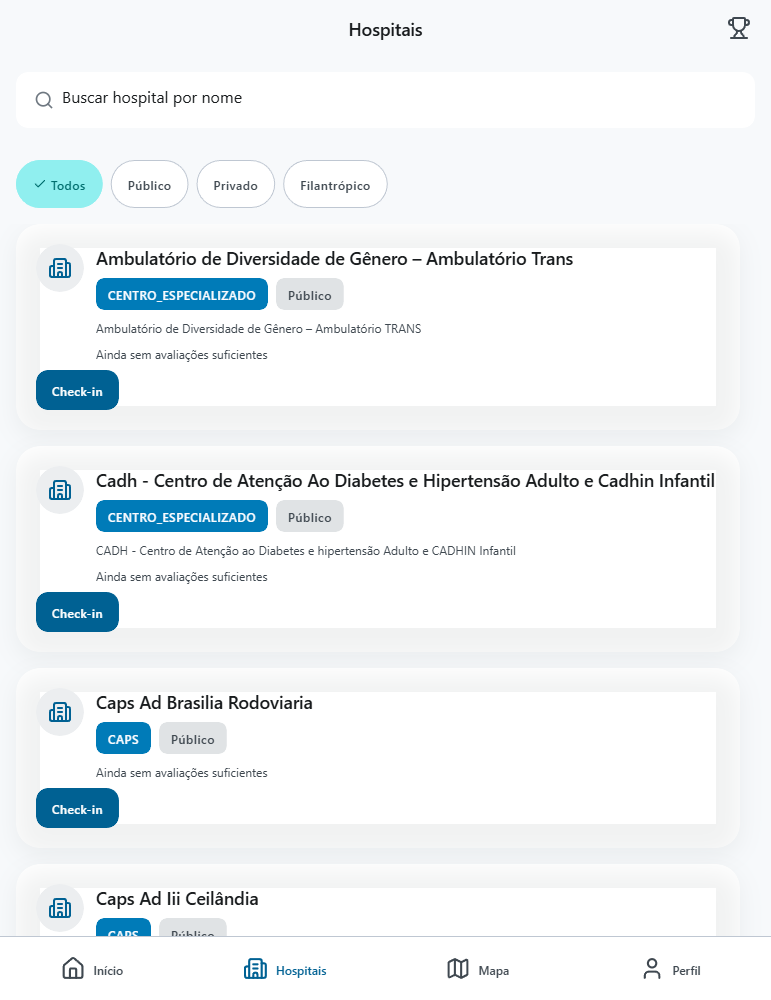
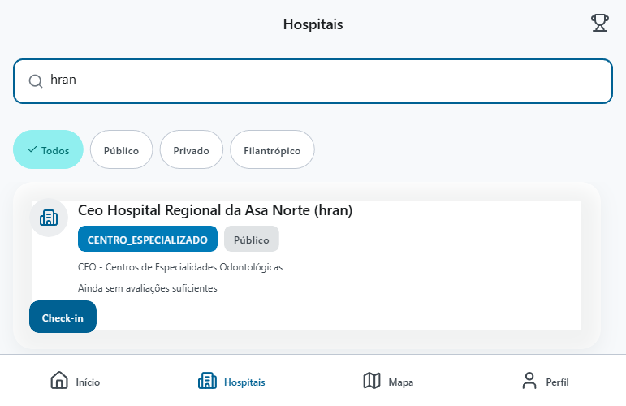
Toque em um hospital da lista para ver o detalhe: endereço, contato, horário de funcionamento, avaliação pública e a localização no mapa.
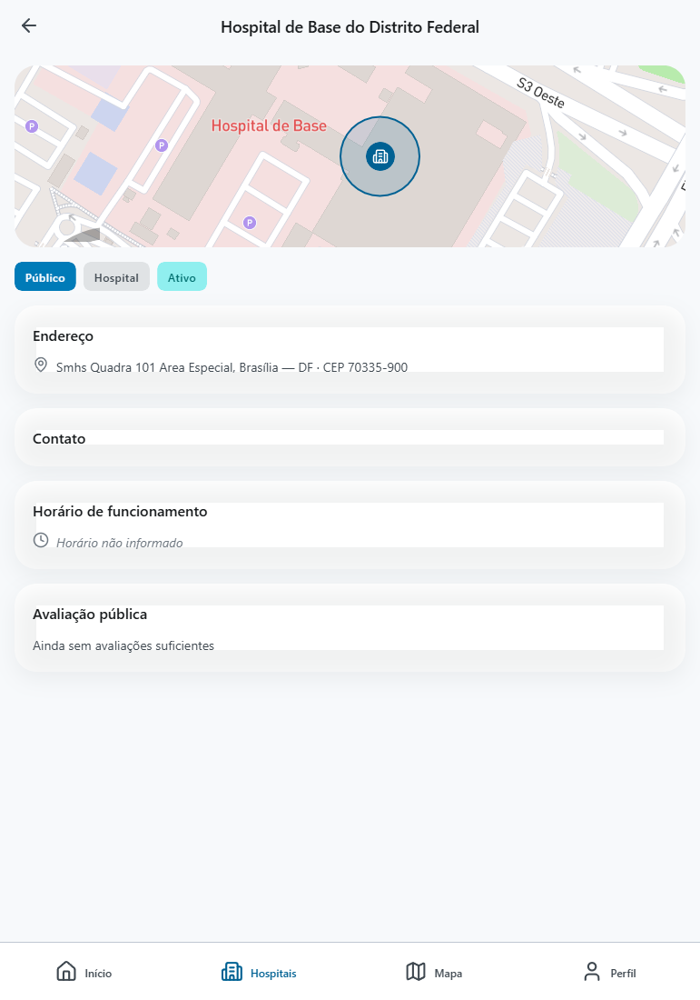
No topo da lista, toque no ícone de troféu para ver o ranking — ordenado pela melhor nota ou pelo menor tempo médio de espera, com filtro por tipo.
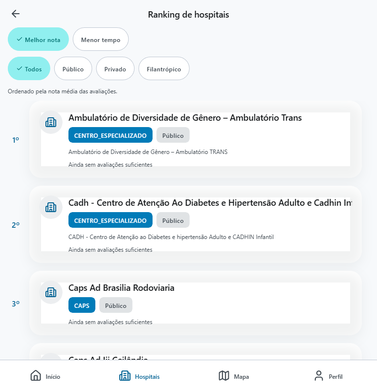
Abra a aba Mapa para ver todos os hospitais próximos num só lugar. Se você permitir o acesso à localização, o app consegue:
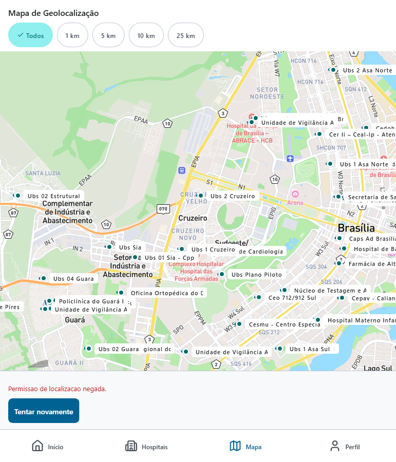
Na aba Perfil, além de entrar ou criar conta, você pode:
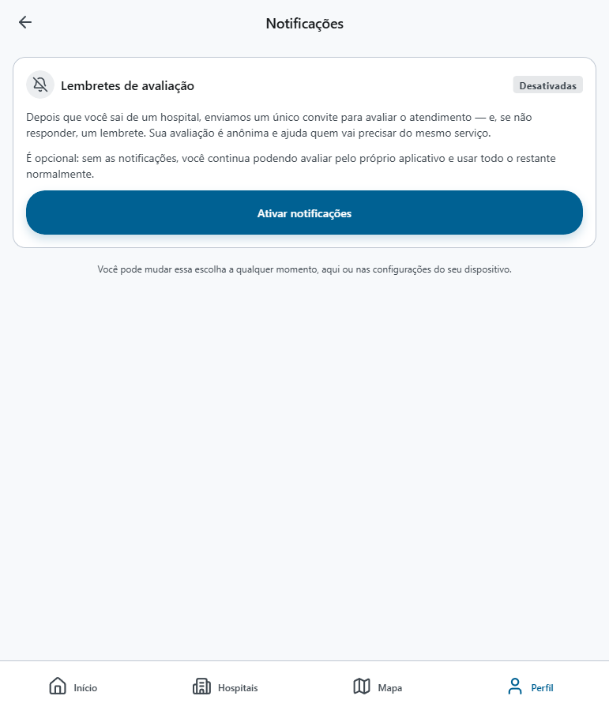
Suas avaliações são sempre anônimas e agregadas por hospital, seguindo a LGPD.